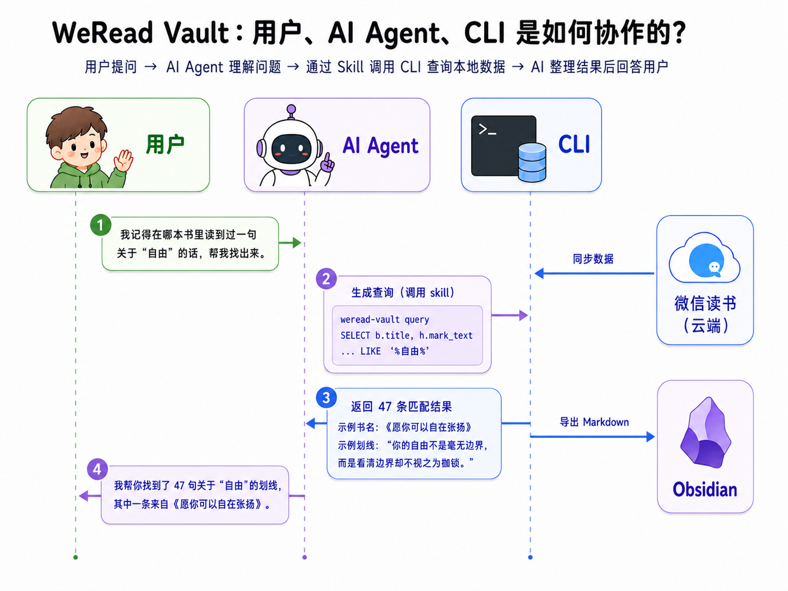
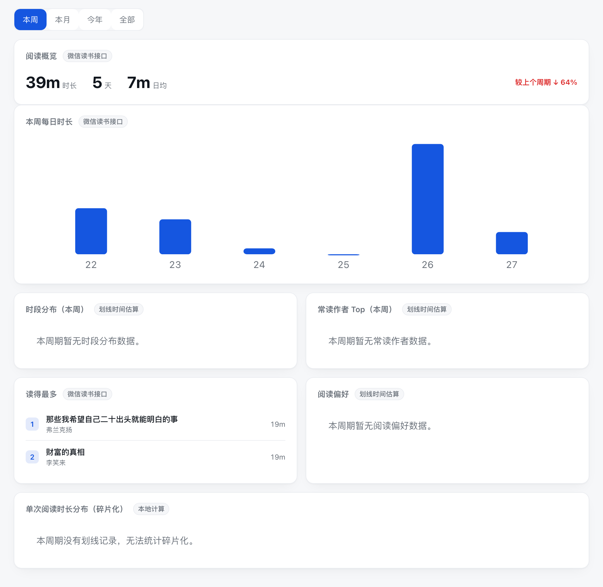

WeRead Vault
微信读书的本地数据库，一个带 Agent Skill 的 CLI。
把书架、划线、想法、阅读统计归档进本机 SQLite —— 可查询、可视化、可导出，AI 直接读，数据不上传。
个人数据归档工具，不是官方客户端，只同步你自己的数据。

微信读书的本地数据库，一个带 Agent Skill 的 CLI。
把书架、划线、想法、阅读统计归档进本机 SQLite —— 可查询、可视化、可导出，AI 直接读，数据不上传。
个人数据归档工具，不是官方客户端，只同步你自己的数据。
微信读书的划线想法 → 同步进你电脑里的 SQLite → 本地网页浏览/统计 → AI 查询、导出到笔记软件。

三种方式，从最省心到最灵活；每种都能顺带装上给 AI 用的 Skill。
把下面这段发给 Claude Code / Codex / OpenClaw，它会在 macOS / Windows / Linux 上装好命令行、启用 Skill 并打开 Dashboard：
请帮我装好 WeRead Vault 并启用它的 Skill：
1) 在 macOS / Windows / Linux 上用 pipx install weread-vault（如果没有 pipx，就用 uvx weread-vault serve --open 先跑起来）
2) 把 https://github.com/dull-bird/weread-vault 的 skills/weread-vault-cli 装成你的 Skill
3) 跑 weread-vault serve --open，打开后提醒我去 https://weread.qq.com/r/weread-skills
取微信读书 API Key 粘贴同步。数据只存我本机，别把 key 写进任何文件。点页面顶部「下载」：macOS 把 WeRead Vault.app 拖进「应用程序」双击；Windows 运行安装包，它会安装到用户目录并把 weread-vault 注册到 PATH（首次未签名 → macOS 右键 App「打开」/ Windows「更多信息→仍要运行」）。启动后在「同步设置」粘贴 API Key 同步。Linux 用户直接用下面的命令行方式，功能一样。想给 AI 用：macOS 在「同步设置」点「注册 weread-vault 命令」，Windows 安装包已自动注册；再按页面的「安装 Skill」提示操作。
pipx install weread-vault # 或 uvx weread-vault serve --open
weread-vault serve --open给 agent 用就再装 Skill：仓库的 skills/weread-vault-cli。
所有数据都存在本机的一个 SQLite 文件里，可备份、可迁移、能离线用，永不上传；本地网页也只监听 127.0.0.1。
把整个书架都同步下来——连没做笔记的书也在，公众号单独归类，而不只是有划线的那一部分。
按周、月、年、全部切换，数字随之变化：读得最久的书、偏爱的分类、常读的时段、同比涨跌，还有 GitHub 式的划线热力图。
除了自己的划线，还能看「大家都在划的句子」和公开书评，搜索书城，顺着同一作者找到更多书。
一套命令行就把微信读书接口、只读 SQL 查询、阅读统计 JSON 都交给 AI——Claude Code、Codex、OpenClaw 拿来就能用。
导出成 Markdown（带封面，可合并他人热门划线并去重），或一键同步到 Obsidian、flomo、Notion。
我的笔记 · 热门划线 · 书评 · 相关推荐


按周 / 月 / 年 / 全部切换，所有数字随之变化



装好后在终端就能用 weread-vault；也可以让对接了 Skill 的 AI 直接帮你跑。
weread-vault sync # 日常增量同步（书架 + 笔记 + 统计）
weread-vault open 三体 # 在微信读书打开一本书（macOS 唤起 App，否则网页版）
weread-vault status # 本地库数量与最近同步状态
weread-vault serve --open # 打开本地网页 Dashboard
weread-vault schedule --daily 07:00 # 每天 07:00 自动同步（系统定时器，不常驻）
# 导出到知识库
weread-vault export markdown --out ~/Documents/weread-notes
weread-vault export flomo --webhook "$FLOMO_WEBHOOK"
weread-vault export notion --token "$NOTION_TOKEN" --database "$NOTION_DATABASE_ID"
# 给 AI 用：直查本地库
weread-vault query "SELECT title,author FROM books ORDER BY rating DESC LIMIT 10"
weread-vault stats # 阅读统计 JSON（供 AI 分析）
# 备份 / 换账号
weread-vault backup --out ~/Backups/weread-vault.db
weread-vault reset --yes # 清空本地阅读数据（不影响 API Key）官方 Skill 是 17 个无状态、按单本书查的接口；WeRead Vault 把它们一次性归档进本地 SQLite，「按书查」变成「随便查」。
| 你想做的事 | 官方微信读书 Skill | WeRead Vault |
|---|---|---|
| 拿到划线 | 只能一次一本（/book/bookmarklist 必填 bookId） | 全部划线归档本地，按任意条件查 |
| 搜遍所有划线找某一句话 | 先翻完所有书清单，再逐本调接口几百次，拉回本地自己筛 | 一条 SQL 全文检索，毫秒级 |
| 跨书聚合（分类、作者排行、笔记最多） | 无聚合接口，得拉全量再自己算 | 一条 GROUP BY 搞定 |
| 持久化 / 离线 | 每次重新拉、必须联网 | 单文件 SQLite，可备份、迁移、离线 |
| 阅读统计可视化 | 只给原始 JSON | 周/月/年切换、热力图、读得最多排行等看板 |
| 他人热门划线 | 有接口，但要逐本调、不留存 | 同步进库，可与自己的划线合并去重再导出 |
| 导出到笔记软件 | 无 | Markdown / Obsidian / flomo / Notion |
| 喂给 AI | 一堆原始接口，AI 得自己编排几百次调用 | query / stats / api 三个命令 + 自带 Skill，一条命令拿到答案 |
| 增量同步 / 事务安全 | 无状态 | 变更水位 + 失败重试，不漏不重 |
| 换账号隔离 | — | 切换账号自动清理旧库 + 账号指纹提示 |
举个例子：「我记得在某本书里读到过一句关于『自由』的话，但忘了是哪本。」——用 WeRead Vault 一条命令瞬间从全部划线里搜出所有命中；用官方 Skill 得翻完整个书架、逐本调接口几百次，几分钟还可能被限流，而且每次搜都要重来一遍。